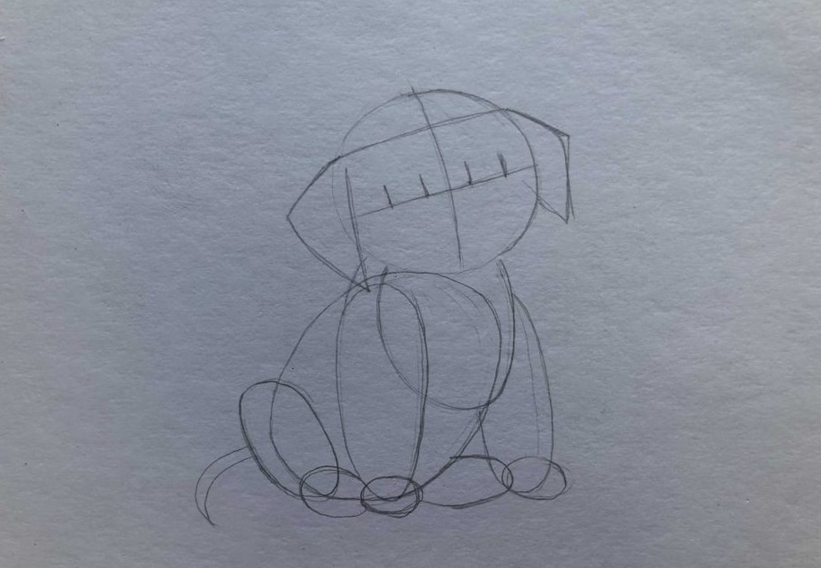

Чтобы научиться красиво рисовать простым карандашом, вам понадобится, во-первых, несколько хороших наточенных карандашей разной степени жесткости, а во-вторых, качественная и плотная бумага, на которой ваш рисунок будет смотреться выгодно. Ниже я более подробно напишу, какие еще материалы вам понадобятся, чтобы начать уроки рисования с нуля самостоятельно.
2 прострых урока рисования карандашом для начинающих
1. Что потребуется для рисования
Поговорим об основных материалах, которые понадобятся вам при освоении рисунка карандашом. Бумага Ни в коем случае не берите для рисования простую офисную бумагу. Она недостаточно плотная и не подходит для рисования. Также, лучше не брать обычную бумагу из альбомов для рисования. Наиболее оптимальным вариантом для уроков рисования будет плотная бумага, которая так и называется – «бумага для рисования». Как правило, она продается в папках, листами по 10-20 штук. Но помните, что если текстура у бумаги будет сильно выражена, то при штриховке это будет заметно.
Простые карандаши – еще один вид материала, к выбору которых нужно подойти со всей ответственностью. Дело в том, что для разных задач в рисунке, вам потребуется карандаш определенной жесткости и мягкости. Так, например, набросок рисунка можно делать карандашом НВ, а вот нанесение теней и штриховки уже лучше делать более мягким и темным карандашом, например, 4В, 5В или 6В.
Незаменимая вещь – ластик. Ластиком можно не только стирать ненужные детали, но также делать блики света на определенных частях рисунка. Подойдет обычный ластик для карандашей
2. Рисуем щенка
Подготовьте все необходимые инструменты для работы. О них мы поговорили выше.
Этапы работы:
- 1 этап – рисуем основные части щенка: голову, лапы, туловище
- 2 этап – рисуем глаза и другие мелкие части щенка
- 3 этап – штриховка глаз и носа

Голову щенка изображаем в форме круга, тело в форме овала. Далее, намечаем грудку овалом, также лапы овалом передние и задние. Также намечаем форму пальчиков передних и задних лап – и точно также рисуем их в форме овала. Немного рисуем хвост щенка, а также уши, делая их более треугольной формы. Обозначаем ось симметрии нашей головы. При этом ось должна иметь полукруглую форму и располагаться под наклоном приблизительно в 45 градусов.
Точно также, мы делим голову щенка приблизительно пополам, где нижняя часть головы будет немного меньше, чем верхняя часть, и на этой оси мы располагаем наши два глаза. Стираем резинкой лишние детали построения, еще раз уточняем форму щенка, затем заштриховываем глазки и носик нашей собачки. Обозначаем глаза и зрачки щенка, а также блики, носик, щечки, и нижнюю челюсть собаки. Затем прорисовываем и уточняем форму ушей, головы, лап и добавляем пальчики к лапкам.
3. Рисуем вазу
Многие начинающие художники часто тренируются в рисовании именно ваз, ведь такой рисунок помогает передавать форму, объем, перспективу, симметрию, делать светотень, то есть отрабатывать самые необходимые и важные навыки для дальнейшего рисования. Кроме того, вазы прекрасно вписываются в натюрморты, так что полученный навык не пропадет зря.
Этапы работы:
- 1 этап – намечаем основание вазы
- 2 этап – придаем форму вазе с помощью эллипсов
- 3 этап – обозначаем линии полутеней на вазе
- 4 этап – штриховка и добавление тени на вазу
- 5 этап – штриховка и затемнение частей вазы
- 6 этап – штрихуем и добавляем блики
Обозначаем ось симметрии, задаем высоту нашей с вами вазы. Далее, показываем разделение горловой части вазы и нижнюю широкую часть вазы. Эту часть делаем немного больше, чем горло вазы. Затем, нижнюю часть вазы делим пополам – это будет у нас разделение нижней части вазы, переход одной формы в другую. Потом мы показываем самую широкую часть вазы – она будет у нас равняться высоте нижней части. Горлышко делаем средним между самой узкой частью и самой широкой частью вазы.
Обозначаем эллипсы. Верхний эллипс – горлышко, далее, рисуем переход горлышка в нижнюю, самую широкую часть вазы, затем рисуем эллипс самой широкой части вазы и эллипс основания вазы. Обращайте внимание на то, что эллипсы должны расширяться от верха к низу. Эллипс находящийся выше всех, на горлышке будет уже, а самый широкий эллипс будет в основании вазы. Затем мы обозначаем форму вазы, имея уже подготовленные размеры – ширины и высоты. Верхняя часть вазы, где горлышко, имеет определенную толщину.
Ластиком стираем линии построения, делаем легче ось симметрии и обозначаем границу собственной тени, небольшой край справа должен занимать рефлекс. Далее, обозначаем линию, где заканчивается у нас полутень, и слева показываем край легкой полутени.
Начинаем добавлять тон, собственная тень должна быть темнее, чем полутон. А полутон – чуть-чуть светлее, чем собственная тень. Также обозначаем тень в углублении горлышка вазы – тень идет от левого края, на легкое высветление к правому. Штриховка наклоном в 45
Вертикальными штрихами начинаем утемнять собственную тень и немного полутон. Также показываем, что край собственной тени должен быть темнее, чем рефлекс и чем полутон. Добавляем легкий тон на световую часть, в нижней части вазы, где идет перелом формы и немного утемняем переход от основания – нижней части вазы, в горлышко, снизу-вверх, и горизонтальными штрихами утемняем горлышко вазы.

Снова меняем карандаш. Теперь берем карандаш НВ и начинаем обобщать: полностью полукруглым штрихом заштриховываем всю вазу. Показываем переломы формы – те формы, которые идут во внутрь, мы утемняем, те формы, которые идут к нам ближе, более выпуклые, мы ослабляем штрих, делая их более светлыми. В самом конце ластиком обозначаем легкие блики, на самых выпуклых частях вазы делаем штрихи жирнее.